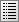

Hugin Panorama Editor window
Tabs
The Panorama Editor window is also "tab" based. Below you see a partial example screen of the Panorama Editor window showing the tabs with the button bar above them.

![[*]](http://wiki.panotools.org/File:Hugin2013_panorama_editor_menu.png){kind=link}
Photos
The Photos tab is used to:
- Manage the images in a Hugin project
- Edit the positions of the images in the final panorama
- Edit the lens settings
- Edit photometrics settings
- Edit/Create stacks
Masks
Often photos contain parts which should not be used in the final panorama (e.g. moving objects); alternatively you may need to specifically include a distinctive feature (e.g. persons) in the final panorama.
The Masks tab allows you to mask these areas for inclusion or exclusion from the stitched panorama.
Control Points
Hugin stitches panoramas by matching identical features in different overlapping photos. These features are defined by pairs of control points. The Control Points tab shows two photos at a time and allows you to manually create and edit any pair of control points.
In addition to the Control Points tab, the Control Points table is used to manage pairs of control points.
Control points can be created automatically in the Align section of the Assistant tab or with the Feature Matching section of the Photos tab.
Optimiser
If you look at the partial screen on showing the Tabs you do not see the Hugin Optimiser tab. This is because the Optimiser tab is only displayed when using the Custom parameters for Geometric Optimisation on the Photos tab.
Exposure
If you look at the partial screen on showing the Tabs you do not see the Hugin Exposure tab. This is because the Exposure tab is only displayed when using the Custom parameters for Photometric Optimisation on the Photos tab.
Stitcher
The end result of a Hugin project is an image file containing a panorama. The final Stitcher tab is where size and quality are set and where this output file is created.
Menus
File
- New: Discard the current project and start a new empty project.
- Open an existing Hugin, PTGUI[*], PTAssembler[*], autopano or autopano-sift project file.
- Save the current project as a Hugin pto file.
- Save as a pto file with a different name.
- Write PTStitcher script saves a simplified project file suitable for batch stitching with PTStitcher, nona or PTmender. Note that nona can stitch a Hugin project file directly, so this step is unnecessary when using nona.
- Most recently used projects shows a list of recent Hugin projects.
- Run Batch Processor launches the Hugin Batch Processor GUI queue manager; note that the queue won't be processed unless this queue manager is running.
- Merge project can be used to merge another project with the current project. New photos will be added to the list of images; for duplicate photos, only the control points are merged.
- Apply Template assigns parameters from an existing pto project to the current set of photos. Only position and lens parameters are transferred; control points are ignored.
- Preferences opens the Hugin Preferences window.
- Quit Hugin.
Edit
- Undo undoes the most recent change to the current project.
- Redo redoes an undo.
- Add Image to the current project.
- Run Assistant will run the automised panorama creator by finding control points, aligning and optimising.
- Send to assistant queue will run the automised panorama creator via the batch processor in case you want to create multiple panoramas after each other.
- Optimize re-optimises the current project. This has exactly the same effect as clicking Optimize Now! in the Optimiser tab.
- Fine-tune all Points does the same as Fine-tune in the Hugin Control Points tab, except that all control points in the project are adjusted. Fine tune settings are set in the Hugin Preferences.
- Remove control points in masks removes all control points in regions which are masked on the Hugin Mask tab.
- Run Python script will run one of the installed or self-created python scripts. This option is only available when Python support has been compiled into your Hugin build.
View
- Full Screen shows this Hugin Main window using as much screen space as possible without any window decorations. Note that the Hugin Fast Preview window can also be set as full screen.
- Control point table shows the Hugin Control Points table.
- Preview window shows the Hugin Preview window.
- Fast Preview window shows the Hugin Fast Preview window which is the Simple User interface screen.
- Photos shows the Hugin Photos tab.
- Masks shows the Hugin Mask tab.
- Control Points shows the Hugin Control Points tab.
- Optimizer shows the Hugin Optimiser tab.
- Exposure shows the Hugin Exposure tab.
- Stitcher shows the Hugin Stitcher tab.
Actions
The Action menu list all install Python plugins for Hugin. It is therefore only available if Hugin is compiled with Python support.
Interface
- Simple: This is the user interface this introduction is written for. It consists of all basic functionality to create a panorama and will suffice in 90% of all cases.
- Advanced: This user interface starts Hugin in the Panorama Editor screen. The simple interface is available in the background.
- Expert: This user interface also starts Hugin in the Panorama Editor screen and unleashes all the power and options of Hugin.
Help
- Help opens the Hugin manual.
- Tip of the day
- Keyboard Shortcuts
- FAQ: Hugin Frequently asked questions
- About shows the Hugin About window[*].
- Donate opens the Hugin donation page; there is no obligation to donate. Any donations are used for travel and promotion costs related to Hugin development.
Buttons
Above the row of tabs are a series of buttons for common commands:
[*] New project
![[*]](http://wiki.panotools.org/File:Hugin_filenew.png){kind=link}
Discards the current project and starts a new empty project.
 [*] Open project
[*] Open project
![[*]](http://wiki.panotools.org/File:Hugin_fileopen.png){kind=link}
Opens an existing Hugin, PTGUI[*], PTAssembler[*], autopano or autopano-sift project file.
 [*] Save project
[*] Save project
![[*]](http://wiki.panotools.org/File:Hugin_filesave.png){kind=link}
Saves the current project as a Hugin .pto file.
[*] Save project as
![[*]](http://wiki.panotools.org/File:Hugin_filesaveas.png){kind=link}
Saves as a .pto file with a different name.
 [*] Undo
[*] Undo
![[*]](http://wiki.panotools.org/File:Hugin_undo.png){kind=link}
Undoes the most recent change to the current project.
 [*] Redo
[*] Redo
![[*]](http://wiki.panotools.org/File:Hugin_redo.png){kind=link}
Redoes an undo.
[*] Add image
![[*]](http://wiki.panotools.org/File:Hugin_edit_add.png){kind=link}
Adds an image or photo to the current project.
[*] Re-optimize
![[*]](http://wiki.panotools.org/File:Hugin_optimize.png){kind=link}
Re-optimises the current project. This has exactly the same effect as clicking Optimize Now! in the Optimiser tab.
[*] Fast Preview panorama
![[*]](http://wiki.panotools.org/File:Gl_preview.png){kind=link}
Shows the Hugin Fast Preview window.
 [*] Preview panorama
[*] Preview panorama
![[*]](http://wiki.panotools.org/File:Hugin_preview.png){kind=link}
Shows the Hugin Preview window.
[*] Show control points
![[*]](http://wiki.panotools.org/File:Hugin_list.png){kind=link}
Shows the Hugin Control Points table.
 [*] About Hugin
[*] About Hugin
![[*]](http://wiki.panotools.org/File:Hugin_info.png){kind=link}
Shows the Hugin About pop-up window; this displays the current version and a list of contributors.